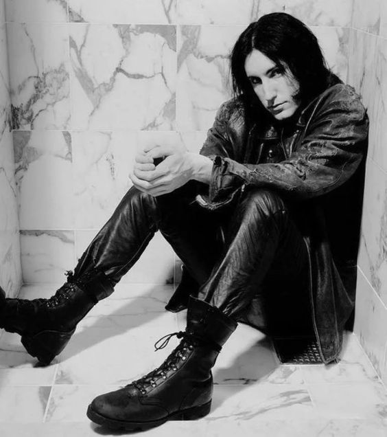

About him...
Michael Trent Reznor (born May 17, 1965) is an American musician, singer, songwriter, record producer, and composer. He serves as the lead vocalist, multi-instrumentalist, and principal songwriter of the industrial rock band Nine Inch Nails, which he founded in 1988.
Trent Reznor
Reznor began his career in the mid-1980s as a member of synth-pop bands such as Option 30, The Innocent, and Exotic Birds. While assembling the earliest Nine Inch Nails recordings, Reznor was unable to find a band that could articulate his songs as he wanted.
Instead, inspired by Prince, he played all the instruments except drums himself. He continued in this role on most Nine Inch Nails studio recordings, though he has occasionally involved other musicians, assistants, drummers, and rhythm experts.
Several labels responded favorably to the demo material, and Reznor signed with TVT Records. Nine selections from the Right Track demos were unofficially released years later in 1994 as Purest Feeling and many of these songs appeared in revised form on Pretty Hate Machine, Reznor's first official release under the Nine Inch Nails name.